Выполнила: Шихалиева Зурият Арсеновна
Группа: Нпи6д03-23
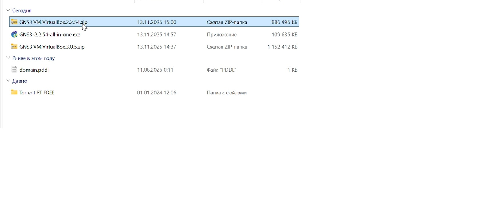
Загрузка файлов GNS3-all-in-one и GNS3 VM
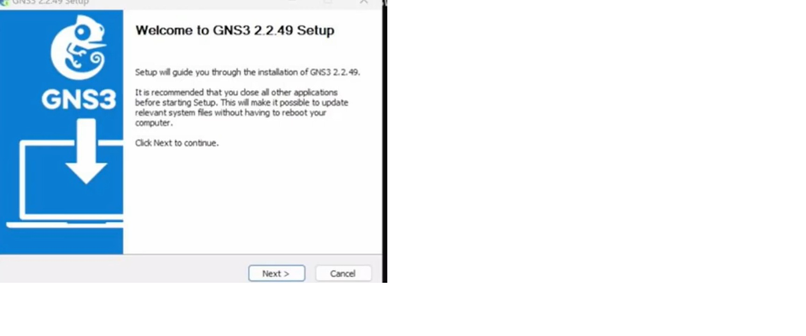
Запуск установочного мастера GNS3
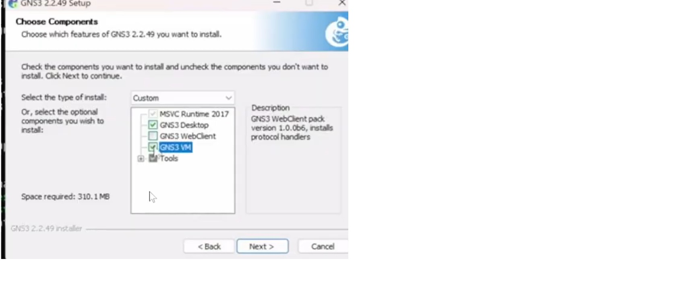
Выбор компонентов для установки
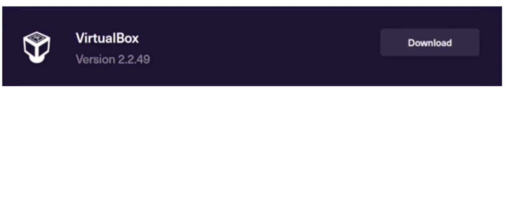
Выбор платформы виртуализации
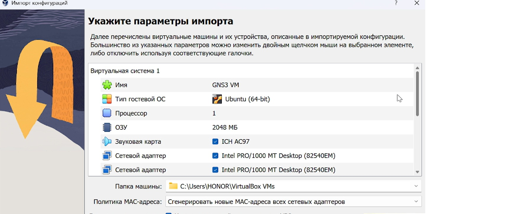
Импорт GNS3 VM в VirtualBox
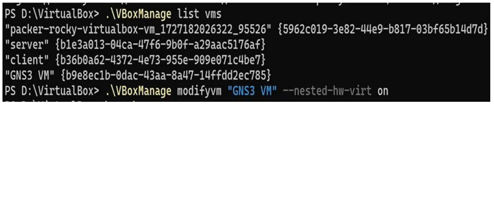
Включение вложенной виртуализации
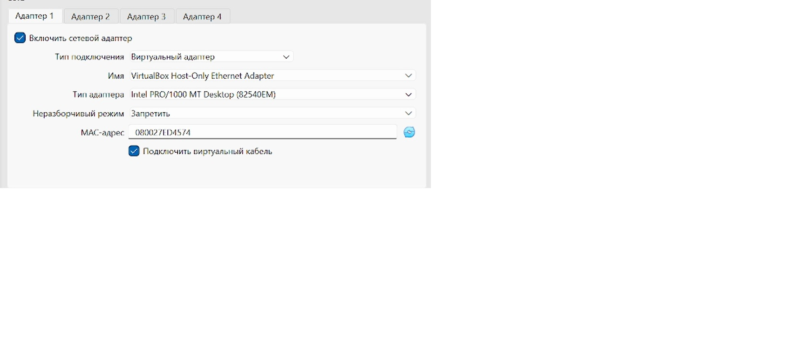
Настройка сетевого адаптера
Настройка DHCP-сервера
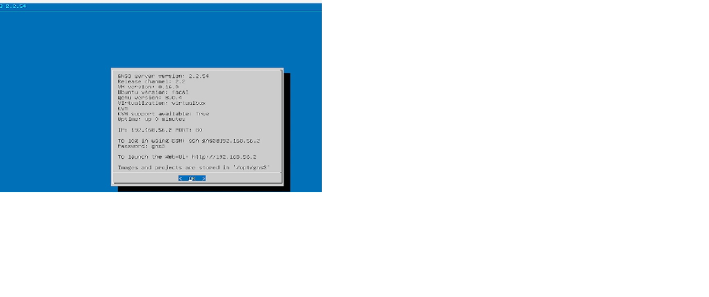
Запуск виртуальной машины
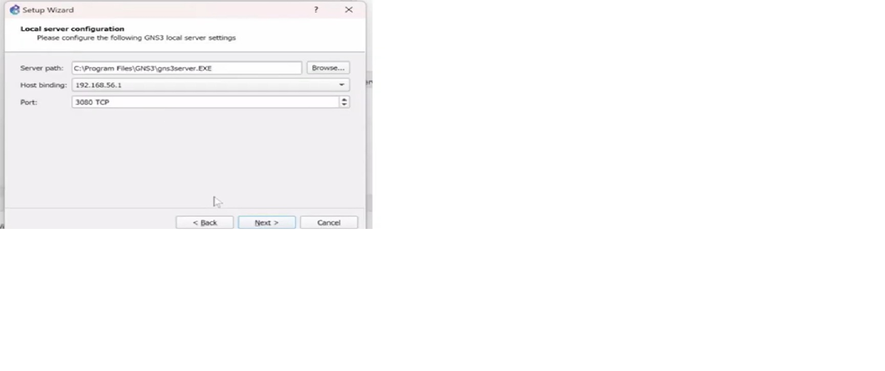
Настройка локального сервера GNS3
Создание нового шаблона устройства
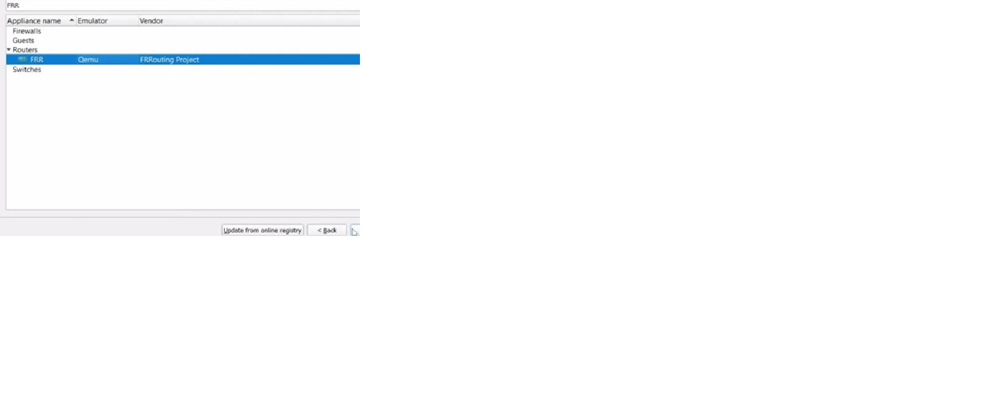
Выбор образа маршрутизатора FRR
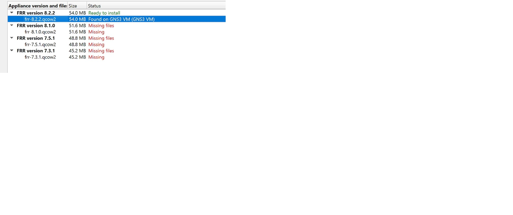
Выбор версии FRR 8.2.2
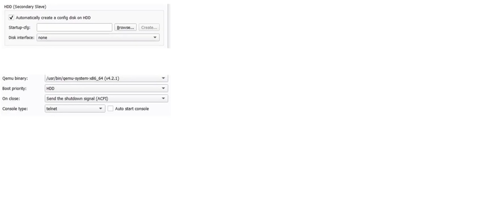
Настройка параметров FRR
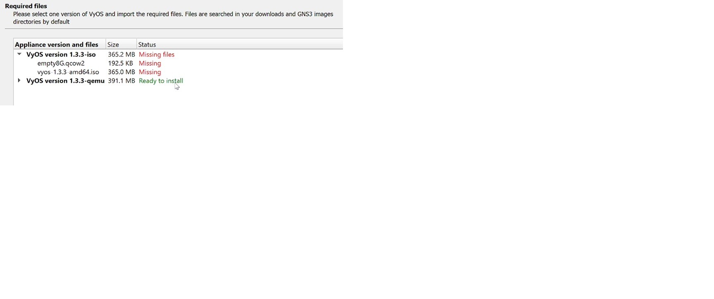
Выбор образа VyOS
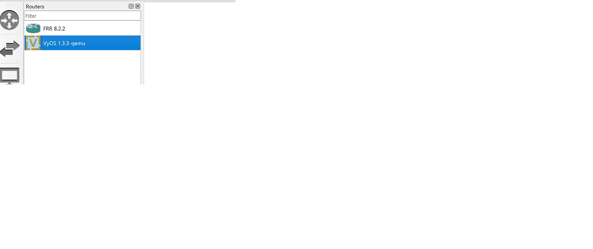
Успешно установлены FRR и VyOS
Вопросы?